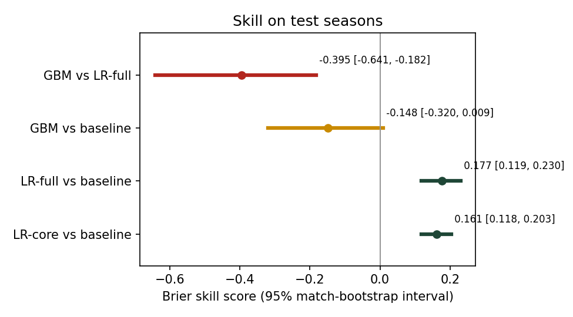
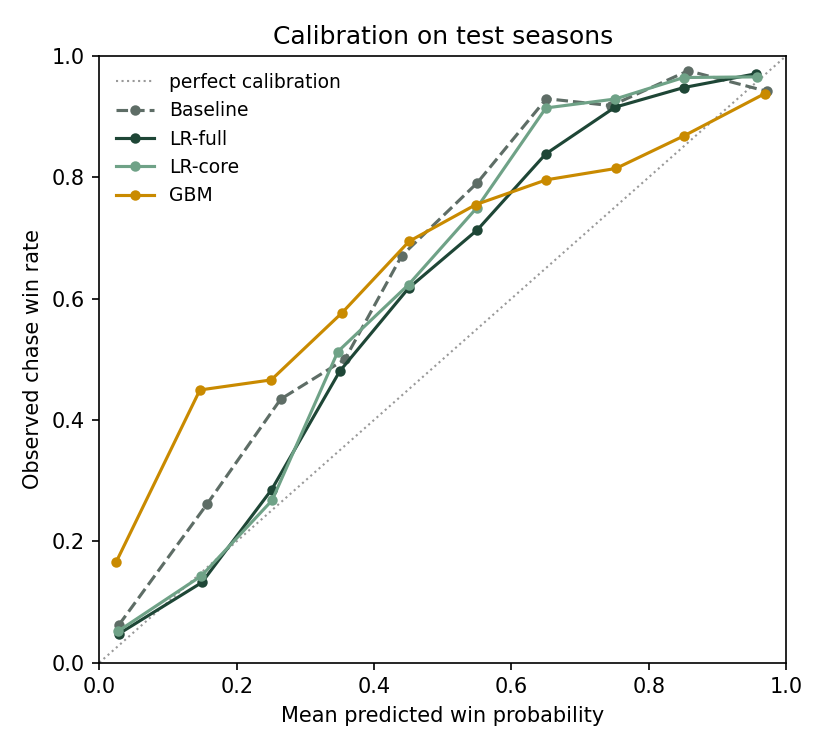
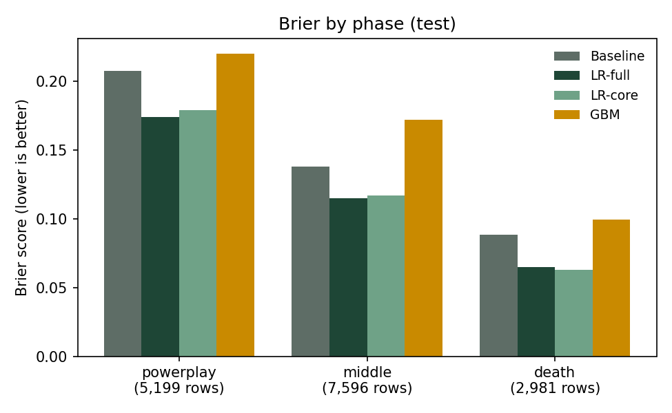
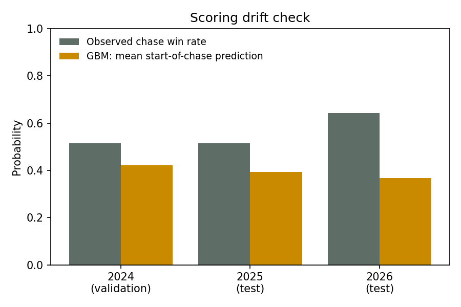

Write-up
The whole project on one page, from the question to the conclusions. Every number here is produced by the pipeline. Code, full reports and data splits are in the GitHub repository.
1. Question and answer
Question. How accurately can we estimate the chasing team's win probability after each delivery of an IPL chase, using only the match state known at that moment, and does a machine-learning model beat a simple historical baseline?
Short answer.
2. What one row is
One row is one delivery of the second innings of a completed IPL match with a full 20-over target. The row holds the scoreboard immediately after that delivery. Its label is 1 if the chasing team went on to win the match and 0 if it lost, so every row of a chase has the same label. The prediction is a probability for that label, made from the row's inputs only.
3. Data
Key variables
Quality issues we found and how we handled them
4. Preprocessing, step by step
Six steps turn the raw match files into model rows. Each is one Python module that reads
only the output of the step before, so any step can be rerun and checked on its own. For
each step: what it does, how, the key functions (linked to the code), and how we checked
it. Run them with python -m iplwp.cli data (steps 1 to 3) and
python -m iplwp.cli features (steps 4 and 5).
-
Read the raw files into one fixed table layout
- Method
- Format detection: every file is opened, and one with
meta,infoandinningskeys is a Cricsheet JSON match. Each delivery becomes one row, in file order, which is bowling order (seq). Cricsheet's nested fields map to fixed columns: runs off the bat, extras, extras type (wide, no-ball, bye, leg-bye, penalty), dismissal kinds, batting and bowling team. Match rows get the date, venue, teams, winner, result (tieorno result; a super-overeliminatoralso means a tie), method (D/L) and the recorded innings-2 target. Season is the calendar year of the first match date, because labels like 2007/08 and 2020/21 are ambiguous. Every column is cast to a fixed type. Adapters for the two common CSV layouts (Kaggle and Cricsheet CSV) produce the same tables. - Key functions
detect_format,read_cricsheet_json,adapt_cricsheet_json,_finalise;enforce_schema- Checked by
- test_adapters.py: the same toy match in all three layouts gives identical rows; the season comes from the date, not the label; alternative column names are accepted; an unknown layout stops with an error naming the missing columns.
-
Decide which matches are full 20-over chases
- Method
- Per innings, sum runs, legal balls (not wide, not no-ball) and wickets (dismissals other than retired hurt or retired not out). Target = first-innings total + 1. Then apply nine rules in a fixed order and give each removed match the first one it fails: duplicate id, no result, tie, DLS, no chase, reduced overs (recorded target overs not 20, or a first innings under 120 legal balls without being bowled out), rebuilt target differing from the recorded one, chase stopping early without a result, and recorded winner disagreeing with the runs. When comparing the winner with the chasing team, renamed franchises (Delhi Daredevils to Delhi Capitals, and so on) count as the same side. Super-over innings are dropped.
- Key functions
clean,innings_summary,_post_clean_checks;wickets_on_delivery;normalise_team- Checked by
- test_clean.py: a toy match for every reason triggers that reason, the first failing rule wins, and both copies of a duplicate are logged. Every removed match is in exclusions.csv.
-
Rebuild the scoreboard after every ball of the chase
For each kept chase, walk through the deliveries in bowling order and record the score immediately after each one. This turns a list of deliveries into a list of situations, which is what the models learn from.
- Method
- Vectorised running totals per match (group by match, cumulative sum):
- legal balls: wides and no-balls add runs but do not use up a ball, because they are bowled again; byes and leg-byes add runs and count as a legal ball;
- runs needed = target − runs so far; balls left = 120 − legal balls; wickets left = 10 − wickets;
- over label from the legal balls before the delivery (14.3 is the third legal ball of the 15th over), and phase from that over: powerplay overs 1–6, middle 7–15, death 16–20;
- a short event text (4, dot, W caught, wd+4, nb+1, 1lb);
- settled flag when the target is reached, the side is all out or no balls are left, with the known result (100% or 0%);
- label: 1 if the chase was won, the same on every row of the match.
- Key functions
build_states,event_texts,running_total_check- Checked by
- The code stops with an error if a chase has more than 120 legal balls or 10 wickets, or a delivery after the result was settled. test_states.py: a hand-worked toy innings with wides, a no-ball with runs, byes, leg-byes, a run-out on a wide, a retired-hurt batter and two dismissals on one ball matches the expected scores, labels and events; a slow ball-by-ball loop gives the same answer as the fast code on 30 real chases.
-
Compute the inputs, using only the past
- Method
- Required rate = 6 × runs needed / balls left, capped. Momentum: for the row with L legal balls bowled, R[k] is the score after the last delivery with k legal balls; then runs in the last window = runs now − R[L − window]. Wickets the same way. This is a lookup on earlier rows only, so it cannot see the future. The four extra terms for logistic regression come from the same row.
- Key functions
compute_features,last_window,core_terms,rrr- Checked by
- test_features.py: the momentum window matches a brute-force count, including wides at the edge of the window; the rate cap works; and the truncation test cuts 50 real chases at random points, rebuilds them, and checks that no earlier input changes.
-
Set the settled balls aside
- Method
- Settled rows keep the flag
is_model_row = falseand their known result. Training, tuning and the main scores use open rows only; the replay shows settled balls as "decided". - Key functions
compute_features(flag),LookupBaseline.fit(refuses settled rows)- Checked by
- test_states.py (settled flags on a win, an all-out and the last ball); test_baseline.py (the baseline rejects settled rows).
-
Split by season
- Method
- Sort the seasons left after cleaning: the last two are test, the one before is validation, the rest are training. Every row of a chase gets its match's split. Steps that tune models read the feature table with the test seasons filtered out while reading, so test rows are never even in memory. Scaling for logistic regression is fit inside the model pipeline, on training rows only.
- Key functions
season_split,assign_split,check_disjoint;read_dev_features- Checked by
- test_split.py: seasons go to the right split, no match id is in two splits, and training seasons all come before validation, before test. The split of every chase is in splits.csv.
No team names, venues or player names are used as inputs. They would make the model describe particular teams instead of match situations, and team strength changes every season.
5. Baseline and models
6. How we evaluated
Split by season
We train on older seasons and test on the most recent ones, as the model would be used: to predict seasons it has not seen. Splitting by season also keeps every ball of a chase in one split. A random split by ball would put balls of the same match in training and test, and the label would leak.
Metrics
Rules that keep the test honest
- Every input for a ball uses only that ball and earlier balls of the same innings, plus the target. A test cuts 50 real chases at random points and checks that the earlier inputs do not change.
- Scalers and lookup tables are fit on training rows only. The tuning stages never read the test seasons.
- All settings, and the choice of main model, were fixed on the validation season. The test seasons were then scored once; the run is recorded in TEST_LOCK.json.
7. Results



More tables (by phase, by season, calibration values, validation numbers) are on the Results page.
8. Error analysis
Why GBM failed: high targets it had rarely seen
Scoring rose, and every method under-predicted chases

The worst matches
9. Limitations
- The results describe historical IPL chases with a full 20-over target only. They do not cover first innings, rain-reduced (DLS) or shortened matches, ties or no-results.
- The models see the scoreboard only. They give a league-average answer and ignore team strength, players, venue, pitch and dew. They do not explain why teams win.
- Balls within a chase are strongly linked. We handle this in the intervals by resampling whole matches, but the effective sample is the number of chases, not the number of balls.
- This is not a betting tool.
10. Explore it yourself
- Replay: pick any test-season chase and step through it ball by ball. Two lines show the two models, so you can see where they disagree; the high-target chases listed in the error analysis show GBM's failure directly.
- What-if calculator: set runs needed, balls left and wickets left and watch how the simple model's probability moves, including how much a wicket is worth late in a chase.
- Edge cases: situations no past chase reached (such as 42 needed off 42 balls with one wicket left), why the simple model said 0% there, and the ball-by-ball simulation that fixes the calculator. Compare the three answers yourself.
- Results: every metric table, with links from each failure case to its replay.
11. Reproduce and check
The repository holds the code, the raw data (as the original Cricsheet zip), the configuration with every constant and seed, and all reports. Useful files:
- README.md: setup, commands (one command runs everything), data access and citations.
- exclusions.csv: every removed match and its reason.
- splits.csv: every kept chase and its split.
- data_quality.md, validation_results.md, results.md: the full reports at each stage; the tuning logs are the CSV files next to them.
- src/iplwp: one module per stage, with tests in tests.
Decisions made along the way
- The data arrived as Cricsheet JSON, so the pipeline has an adapter for that format.
- Rare scoreboard states fall back to coarser buckets in the baseline instead of straight to the overall win rate, so the baseline is not unfairly weak.
- The calculator uses a model built on its three inputs only (LR-core), so it never has to invent a target or recent-form values.
- To allow for the Impact Player rule (from 2023), training could weight recent seasons more; how much was chosen on validation.
- After the test run we found that the calculator gave impossible certainties (0% for 42 needed off 42 balls with one wicket left) in situations the data never reached. The calculator now blends the simple model with a ball-by-ball simulation according to how much data backs each situation. Its settings were chosen on validation; the main results are unchanged. Details on the Edge cases page.
12. Team, AI use and citations
Vinit Parmar (24110239) and Dutt Parmar (24110115), ES 335 Machine Learning.
AI use. We used Kiro (an AI coding assistant running Claude) to help write the data pipeline, the tests and this website, following a design and task plan we wrote first. We made the modelling decisions ourselves at fixed review points, and reviewed the data-quality, validation and test reports before approving each next step. AI_USE.md logs what the tool did and what we checked.
Data. Ball-by-ball data from Cricsheet, released under the Open Data Commons Attribution License (ODC-By 1.0).
Software. scikit-learn (Pedregosa et al., 2011), pandas, NumPy, matplotlib and Chart.js. Brier score: Brier (1950). Bootstrap intervals: Efron and Tibshirani (1993). Full references are in the README.